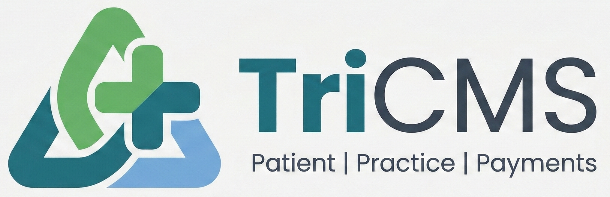

Choose a clinic environment below to launch your dedicated full-access portal experience.
Explore the full suite of TriCMS features tailored for an advanced multi-specialty environment.
Experience a streamlined interface specifically designed for efficient solo practitioner workflows.